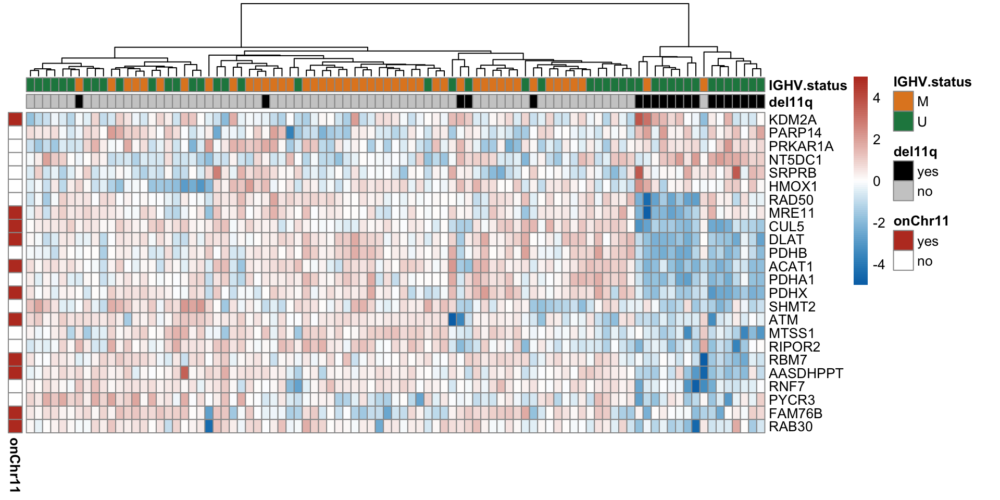

Section 6: Proteomic signature of del(11)(q22.3)
Junyan Lu
2020-10-09
Last updated: 2021-05-06
Checks: 6 1
Knit directory: CLLproteomics_publish_revision/analysis/
This reproducible R Markdown analysis was created with workflowr (version 1.6.2). The Checks tab describes the reproducibility checks that were applied when the results were created. The Past versions tab lists the development history.
The R Markdown is untracked by Git. To know which version of the R Markdown file created these results, you’ll want to first commit it to the Git repo. If you’re still working on the analysis, you can ignore this warning. When you’re finished, you can run wflow_publish to commit the R Markdown file and build the HTML.
Great job! The global environment was empty. Objects defined in the global environment can affect the analysis in your R Markdown file in unknown ways. For reproduciblity it’s best to always run the code in an empty environment.
The command set.seed(20200227) was run prior to running the code in the R Markdown file. Setting a seed ensures that any results that rely on randomness, e.g. subsampling or permutations, are reproducible.
Great job! Recording the operating system, R version, and package versions is critical for reproducibility.
Nice! There were no cached chunks for this analysis, so you can be confident that you successfully produced the results during this run.
Great job! Using relative paths to the files within your workflowr project makes it easier to run your code on other machines.
Great! You are using Git for version control. Tracking code development and connecting the code version to the results is critical for reproducibility.
The results in this page were generated with repository version 3fb50c5. See the Past versions tab to see a history of the changes made to the R Markdown and HTML files.
Note that you need to be careful to ensure that all relevant files for the analysis have been committed to Git prior to generating the results (you can use wflow_publish or wflow_git_commit). workflowr only checks the R Markdown file, but you know if there are other scripts or data files that it depends on. Below is the status of the Git repository when the results were generated:
Ignored files:
Ignored: .DS_Store
Ignored: .Rhistory
Ignored: .Rproj.user/
Ignored: analysis/.DS_Store
Ignored: analysis/.Rhistory
Ignored: analysis/manuscript_S1_Overview_cache/
Ignored: analysis/manuscript_S2_genomicAssociation_cache/
Ignored: analysis/manuscript_S3_trisomy12_cache/
Ignored: analysis/manuscript_S4_IGHV_cache/
Ignored: analysis/manuscript_S5_trisomy19_cache/
Ignored: code/.DS_Store
Ignored: code/.Rhistory
Ignored: data/.DS_Store
Ignored: output/.DS_Store
Untracked files:
Untracked: analysis/.trisomy12_norm.pdf
Untracked: analysis/IGHV_box.pdf
Untracked: analysis/IGHV_enrich.pdf
Untracked: analysis/IGHV_volcano.pdf
Untracked: analysis/bufferComplexViolin.pdf
Untracked: analysis/buffer_Tri12vsTri19.pdf
Untracked: analysis/cohortComposition_all.pdf
Untracked: analysis/heatmap_tri12_circle.pdf
Untracked: analysis/manuscript_S1_Overview.Rmd
Untracked: analysis/manuscript_S2_genomicAssociation.Rmd
Untracked: analysis/manuscript_S3_trisomy12.Rmd
Untracked: analysis/manuscript_S4_IGHV.Rmd
Untracked: analysis/manuscript_S5_trisomy19.Rmd
Untracked: analysis/manuscript_S6_del11q.Rmd
Untracked: analysis/manuscript_S7_SF3B1.Rmd
Untracked: analysis/manuscript_S8_drugResponse_Outcomes.Rmd
Untracked: analysis/manuscript_S9_STAT2.Rmd
Untracked: analysis/plot_PC1_PC2.pdf
Untracked: analysis/timsTOF_validate.Rmd
Untracked: analysis/tri12_transEnrich.pdf
Untracked: analysis/tri19_dosage_effect.pdf
Untracked: analysis/tri19_sum_buffer_number.pdf
Untracked: analysis/trisomy12_chr_summary.pdf
Untracked: code/utils.R
Untracked: data/Annotation file March 2021.xlsx
Untracked: data/CAS9results.xlsx
Untracked: data/CNV_onChrom.RData
Untracked: data/ComplexParticipantsPubMedIdentifiers_human.txt
Untracked: data/Fig1A.png
Untracked: data/IGLV321_SupplementalTables_R2.xlsx
Untracked: data/MOFAout.RData
Untracked: data/MOFAout_atLeast3.RData
Untracked: data/STATexprPCR.xlsx
Untracked: data/Western_blot_results_20210309_short.csv
Untracked: data/Western_blot_results_separate_blots.xlsx
Untracked: data/allComplexes.txt
Untracked: data/ddsrna_enc.RData
Untracked: data/exprCNV_enc.RData
Untracked: data/geneAnno.RData
Untracked: data/gmts/
Untracked: data/ic50.RData
Untracked: data/mofaIn.RData
Untracked: data/mofaIn_atLeast3.RData
Untracked: data/patMeta_enc.RData
Untracked: data/pepCLL_lumos_enc.RData
Untracked: data/protMOFA.RData
Untracked: data/proteins_in_complexes
Untracked: data/proteomic_LUMOS_2pep_enc.RData
Untracked: data/proteomic_explore_enc.RData
Untracked: data/proteomic_independent_all_enc.RData
Untracked: data/proteomic_independent_enc.RData
Untracked: data/proteomic_timsTOF_enc.RData
Untracked: data/screenData_enc.RData
Untracked: data/setToPathway.txt
Untracked: data/survival_enc.RData
Untracked: output/MSH6_splicing.svg
Untracked: output/SUGP1_splicing.svg
Untracked: output/deResList.RData
Untracked: output/deResListBatch2.RData
Untracked: output/deResListRNA.RData
Untracked: output/deResListRNA_allGene.RData
Untracked: output/deResList_WBC.RData
Untracked: output/deResList_batch1.RData
Untracked: output/deResList_batch3.RData
Untracked: output/deResList_independent.RData
Untracked: output/deResList_timsTOF.RData
Untracked: output/dxdCLL.RData
Untracked: output/dxdCLL2.RData
Untracked: output/exprCNV.RData
Untracked: output/geneAnno.RData
Untracked: output/int_pairs.csv
Untracked: output/lassoResults_CPS.RData
Untracked: output/resOutcome_batch1.RData
Untracked: output/resOutcome_batch13.RData
Untracked: output/resOutcome_batch2.RData
Untracked: output/resOutcome_batch3.RData
Unstaged changes:
Modified: analysis/_site.yml
Deleted: analysis/analysisSF3B1.Rmd
Deleted: analysis/comparePlatforms.Rmd
Deleted: analysis/compareProteomicsRNAseq.Rmd
Deleted: analysis/correlateCLLPD.Rmd
Deleted: analysis/correlateGenomic.Rmd
Deleted: analysis/correlateGenomic_removePC.Rmd
Deleted: analysis/correlateMIR.Rmd
Deleted: analysis/correlateMethylationCluster.Rmd
Modified: analysis/index.Rmd
Deleted: analysis/predictOutcome.Rmd
Deleted: analysis/processProteomics_LUMOS.Rmd
Deleted: analysis/processProteomics_timsTOF.Rmd
Deleted: analysis/qualityControl_LUMOS.Rmd
Deleted: analysis/qualityControl_timsTOF.Rmd
Note that any generated files, e.g. HTML, png, CSS, etc., are not included in this status report because it is ok for generated content to have uncommitted changes.
There are no past versions. Publish this analysis with wflow_publish() to start tracking its development.
Load packages and datasets
library(limma)
library(DESeq2)
library(tidygraph)
library(igraph)
library(ggraph)
library(pheatmap)
library(ggbeeswarm)
library(cowplot)
library(SummarizedExperiment)
library(tidyverse)
#load datasets
load("../data/patMeta_enc.RData")
load("../data/proteomic_explore_enc.RData")
load("../data/ddsrna_enc.RData")
load("../output/deResList.RData") #precalculated differential expression
load("../output/deResListRNA.RData")
#protCLL <- protCLL[rowData(protCLL)$uniqueMap,]
source("../code/utils.R")
knitr::opts_chunk$set(echo = TRUE, warning = FALSE, message = FALSE,dev = c("png","pdf"))Overview of differentially expressed proteins
A table of associations with 5% FDR
resList <- filter(resList, Gene == "del11q") %>%
#mutate(adj.P.Val = adj.P.global) %>% #use IHW corrected P-value
mutate(Chr = rowData(protCLL[id,])$chromosome_name)
resList %>% filter(adj.P.Val <= 0.05) %>%
select(name, Chr,logFC, P.Value, adj.P.Val) %>%
mutate_if(is.numeric, formatC, digits=2) %>%
DT::datatable()How many are on chr11
table(filter(resList,adj.P.Val <= 0.05)$Chr)
11 12 17 22 3 5 6 8 X
11 1 1 1 4 1 2 2 1 Heatmap of differentially expressed proteins (5% FDR)
proList <- filter(resList, !is.na(name), adj.P.Val < 0.05) %>% distinct(name, .keep_all = TRUE) %>% pull(id)
plotMat <- assays(protCLL)[["QRILC_combat"]][proList,]
rownames(plotMat) <- rowData(protCLL[proList,])$hgnc_symbol
colAnno <- filter(patMeta, Patient.ID %in% colnames(protCLL)) %>%
select(Patient.ID, del11q, IGHV.status) %>%
data.frame() %>% column_to_rownames("Patient.ID")
colAnno$del11q <- ifelse(colAnno$del11q %in% 1, "yes","no")
rowAnno <- rowData(protCLL)[proList,c("chromosome_name","hgnc_symbol"),drop=FALSE] %>%
data.frame(stringsAsFactors = FALSE) %>% remove_rownames() %>%
mutate(onChr11 = ifelse(chromosome_name == "11","yes","no")) %>%
select(hgnc_symbol, onChr11) %>% data.frame() %>% column_to_rownames("hgnc_symbol")
plotMat <- jyluMisc::mscale(plotMat, censor = 5)
annoCol <- list(del11q = c(yes = "black",no = "grey80"),
IGHV.status = c(M = colList[3], U = colList[4]),
onChr11 = c(yes = colList[1],no = "white"))
pheatmap::pheatmap(plotMat, annotation_col = colAnno, scale = "none",
annotation_row = rowAnno,
clustering_method = "ward.D2",
color = colorRampPalette(c(colList[2],"white",colList[1]))(100),
breaks = seq(-5,5, length.out = 101), annotation_colors = annoCol,
show_rownames = TRUE, show_colnames = FALSE,
treeheight_row = 0)
Volcano plot
plotTab <- resList %>% mutate(onChr11 = ifelse(Chr %in% "11","yes","no"))
#nameList <- filter(resList, adj.P.Val < 0.1)$name
nameList <- c("ATM","CUL5")
del11qVolcano <- plotVolcano(plotTab, fdrCut =0.05, x_lab="log2FoldChange", posCol = colList[1], negCol = colList[2],
plotTitle = "del(11)(q22.3)", ifLabel = TRUE, labelList = nameList)
del11qVolcanoBoxplot plot of selected genes
protTab <- sumToTidy(protCLL, rowID = "uniprotID", colID = "patID") %>%
mutate(count = count_combat)
plotTab <- protTab %>% filter(hgnc_symbol %in% nameList) %>%
mutate(del11q = patMeta[match(patID, patMeta$Patient.ID),]$del11q) %>%
mutate(status = ifelse(del11q %in% 1,"del(11)(q22.3)","other"),
name = hgnc_symbol) %>%
mutate(status = factor(status, levels = c("other","del(11)(q22.3)")))
pList <- plotBox(plotTab, pValTabel = resList, y_lab = "Protein expression")
del11qBox <- cowplot::plot_grid(plotlist= pList, ncol=1)
del11qBoxCompare with RNA sequencing data
Differentially expressed genes related to trisomy11q
Prepare RNA sequencing data
ddsCLL <- dds[rownames(dds) %in% rowData(protCLL)$ensembl_gene_id,]
ddsCLL.vst <- varianceStabilizingTransformation(dds)Differential expression
resTab <- filter(resListRNA, Gene == "del11q")Boxplot of selected genes
plotTab <- assay(ddsCLL.vst[match(nameList, rowData(ddsCLL.vst)$symbol),]) %>%
data.frame() %>% rownames_to_column("id") %>%
mutate(name = rowData(ddsCLL.vst[id,])$symbol) %>%
gather(key = "patID", value = "count", -id, -name) %>%
mutate(del11q = patMeta[match(patID, patMeta$Patient.ID),]$del11q) %>%
mutate(status = ifelse(del11q %in% 1,"del11q","other")) %>%
mutate(status = factor(status, levels = c("other","del11q")))
pList <- plotBox(plotTab, pValTabel = resTab, y_lab = "Normalized RNA expression")
cowplot::plot_grid(plotlist= pList, ncol=1)
Correlations between RNA and protein expression
rnaMat <- assay(ddsCLL.vst)
protMat <- assays(protCLL)[["count_combat"]]
rownames(protMat) <- rowData(protCLL)$ensembl_gene_id
overSample <- intersect(colnames(rnaMat), colnames(protMat))
rnaMat <- rnaMat[,overSample]
protMat <- protMat[,overSample]
plotList <- lapply(nameList, function(n) {
geneId <- rownames(ddsCLL.vst)[match(n, rowData(ddsCLL.vst)$symbol)]
stopifnot(length(geneId) ==1)
plotTab <- tibble(x=rnaMat[geneId,],y=protMat[geneId,])
coef <- cor(plotTab$x, plotTab$y, use="pairwise.complete")
annoPos <- ifelse (coef > 0, "left","right")
plotCorScatter(plotTab, "x","y", showR2 = FALSE, annoPos = annoPos, x_lab = "RNA expression",
y_lab ="Protein expression", title = n,dotCol = colList[4], textCol = colList[1])
})
cowplot::plot_grid(plotlist = plotList, ncol =2)
Plot RNA and protein expression in the chromosome regions around 11q22.3
load("../data/exprCNV_enc.RData")Normalize protein and RNA expression
normalized <- TRUE
#if perform normalization
if (normalized) {
#for protein
exprMat <- select(allProtTab,patID, id,expr) %>%
distinct(patID, id, .keep_all = TRUE) %>%
spread(key = patID, value =expr) %>% data.frame() %>%
column_to_rownames("id") %>% as.matrix()
qm <- jyluMisc::mscale(exprMat, useMad = F)
normTab <- data.frame(qm) %>% rownames_to_column("id") %>%
gather(key = "patID", value = "expr", -id)
allProtTab <- select(allProtTab, -expr) %>% left_join(normTab, by = c("patID","id"))
#for RNA
exprMat <- select(allRnaTab,patID, id,expr) %>%
distinct(patID, id, .keep_all = TRUE) %>%
spread(key = patID, value =expr) %>% data.frame() %>%
column_to_rownames("id") %>% as.matrix()
qm <- jyluMisc::mscale(exprMat, useMad = F)
normTab <- data.frame(qm) %>% rownames_to_column("id") %>%
gather(key = "patID", value = "expr", -id)
allRnaTab <- select(allRnaTab, -expr) %>% left_join(normTab, by = c("patID","id"))
}Function for plotting
plotExprCNV <- function(pat, chr, allBand, allLine, allProtTab, allRnaTab, ifTrend = FALSE, plotTitle = "",
startPos = -Inf, endPos= Inf, showLabel = "none", plotDiff = FALSE, errorBar = FALSE) {
multiPat <- length(unique(pat)) > 1
#table for cyto band
bandTab <- filter(allBand, ChromID == chr)
#table for expression
plotProtTab <- filter(allProtTab, ChromID == chr, patID %in% pat) %>%
mutate(expression = "protein") %>%
mutate_if(is.factor,as.character)
plotRnaTab <- filter(allRnaTab, ChromID == chr, patID %in% pat) %>%
mutate(expression = "rna") %>% mutate_if(is.factor,as.character)
if (!plotDiff) {
plotExprTab <- bind_rows(plotRnaTab, plotProtTab) %>%
filter(start_position > startPos, end_position < endPos)
} else {
plotProtTab <- plotProtTab %>% dplyr::rename(protein = expr)
plotRnaTab <- plotRnaTab %>% select(id, expr) %>%
dplyr::rename(rna = expr)
plotExprTab <- left_join(plotProtTab, plotRnaTab, by = "id") %>%
mutate(expr = protein-rna, expression = "protein-rna") %>%
filter(start_position > startPos, end_position < endPos) %>%
select(-protein,-rna)
}
if (multiPat) {
se <- function(x) sqrt(var(x,na.rm = T)/length(x))
plotExprTab <- group_by(plotExprTab, id, symbol, ChromID, start_position, end_position,mid_position, expression) %>%
summarise(upper = mean(expr,na.rm=T) + 1.96*se(expr), lower = mean(expr,na.rm=T) - 1.96*se(expr),
expr = mean(expr)) %>%
ungroup()
}
#table for copy number
plotLineTab <- filter(allLine, patID %in% pat, ChromID == chr)
#plot range
maxVal <- max(c(max(plotExprTab$expr,na.rm = T),max(plotLineTab$SegmentMean,na.rm = T)),na.rm = T) + 1
minVal <- min(c(min(plotExprTab$expr, na.rm = T),min(plotLineTab$SegmentMean,na.rm = T)),na.rm = T) - 1
#maxVal <- 5
#minVal <- -5
xMax <- max(bandTab$chromEnd, na.rm = T)
#main plot
gg <- ggplot() +
geom_rect(data=bandTab, mapping=aes(xmin=chromStart, xmax=chromEnd, ymin=minVal, ymax=maxVal,
fill=Colour, label = band), alpha=0.1) +
geom_text(data=bandTab, mapping=aes(label=band, x=chromMid), y=maxVal, hjust =1, angle = 90, size=4) +
geom_rect(data=plotLineTab,
mapping=aes(xmin=Start, xmax=End, ymin=SegmentMean,
ymax=SegmentMean+0.5,fill = set),alpha=0.2)
if (multiPat & errorBar) {
gg <- gg + geom_errorbar(data = plotExprTab,
aes(x = mid_position, y = expr + 0.25, ymax = upper + 0.25, ymin=lower + 0.25),
col = "grey60")
}
gg <- gg + geom_rect(data = plotExprTab,
mapping=aes(xmin=start_position,
xmax=end_position, ymin=expr, ymax=expr+0.5,
fill = expression, label = symbol), alpha =0.8) +
#scale_x_continuous(expand=c(0,0),limits = c(max(0,startPos),min(xMax,endPos))) +
scale_y_continuous(limits = c(minVal, maxVal), sec.axis = sec_axis(~./1, name = "Copy number")) +
coord_cartesian(xlim = c(max(0,startPos),min(xMax,endPos)), expand = FALSE)+
xlab("Genomic position [Mb]") +
ylab("Expression z-score") +
scale_fill_manual(values = c(even = "white",odd = "grey50",
rna = colList[1], protein = colList[2], `protein-rna` = "salmon",
WES = "darkgreen",WGS = "orange", Methylome = "purple")) +
scale_color_manual(values = c(protein = "blue",rna = "red",`protein-rna` = "salmon")) +
ggtitle(plotTitle) +
theme(plot.title = element_text(face = "bold", size = 18),
axis.text = element_text(size=16),
axis.title = element_text(size=16),
axis.line = element_blank(),
legend.position = "none",
panel.background = element_blank(),
panel.grid.major = element_line(colour="grey90", size=0.1))
if (showLabel != "none") {
gg <- gg +
ggrepel::geom_text_repel(data = filter(plotExprTab,
expression == showLabel),
aes(x=mid_position, y=expr, label = symbol))
}
if (ifTrend) {
gg <- gg + geom_smooth(data =filter(plotExprTab),
mapping = aes(y=expr, x= mid_position,
color = expression),
method = "loess", se=FALSE, span=0.2,
size =0.2)
}
#for legend
## if the patient has CNV data
lgTab <- tibble(x= seq(90),y=seq(90),
Expression = c(rep("protein",30), rep("rna",30),rep("protein-rna",30)),
CNV_data = rep(c("WES","WGS","Methylome"),30))
if (nrow(plotLineTab) >0) {
lgTab <- filter(lgTab, CNV_data %in% unique(plotLineTab$set),
Expression %in% unique(plotExprTab$expression))
lg <- ggplot(lgTab, aes(x=x,y=y)) +
geom_point(aes(fill = Expression), shape =22,size=3) +
geom_line(aes(color = CNV_data),size=5) +
scale_fill_manual(values = c(rna = colList[1], protein = colList[2],`protein-rna` = "salmon")) +
scale_color_manual(values = c(WES = "darkgreen",WGS = "orange", Methylome = "purple"), guide = FALSE) +
theme(legend.position = "bottom",
legend.text = element_text(size=16),
legend.title = element_text(size=16))
} else {
lgTab <- filter(lgTab, Expression %in% unique(plotExprTab$expression))
lg <- ggplot(lgTab, aes(x=x,y=y)) +
geom_point(aes(fill = Expression), shape =22,size=3) +
scale_fill_manual(values = c(rna = colList[1], protein = colList[2],`protein-rna` = "salmon")) +
theme(legend.position = "bottom",
legend.text = element_text(size=16),
legend.title = element_text(size=16))
}
lg <- get_legend(lg)
return(list(main=gg, legend = lg))
}allLine.wes <- filter(allLine, set == "WES")
patList <- intersect(intersect(filter(patMeta, del11q %in% 1)$Patient.ID,allProtTab$patID),allRnaTab$patID)
g <- plotExprCNV(patList,"chr11",allBand, allLine.wes, allProtTab, allRnaTab,
ifTrend = FALSE, startPos = 92.8, endPos = 123, showLabel = "protein",
plotTitle = "chromosome 11: q21 to q24.1")
geneCoordPlot <- plot_grid(g$main, g$legend, ncol = 1, rel_heights = c(1,0.2))
geneCoordPlot
sessionInfo()R version 4.0.2 (2020-06-22)
Platform: x86_64-apple-darwin17.0 (64-bit)
Running under: macOS 10.16
Matrix products: default
BLAS: /Library/Frameworks/R.framework/Versions/4.0/Resources/lib/libRblas.dylib
LAPACK: /Library/Frameworks/R.framework/Versions/4.0/Resources/lib/libRlapack.dylib
locale:
[1] en_US.UTF-8/en_US.UTF-8/en_US.UTF-8/C/en_US.UTF-8/en_US.UTF-8
attached base packages:
[1] parallel stats4 stats graphics grDevices utils datasets
[8] methods base
other attached packages:
[1] latex2exp_0.4.0 forcats_0.5.1
[3] stringr_1.4.0 dplyr_1.0.5
[5] purrr_0.3.4 readr_1.4.0
[7] tidyr_1.1.3 tibble_3.1.0
[9] tidyverse_1.3.0 cowplot_1.1.1
[11] ggbeeswarm_0.6.0 pheatmap_1.0.12
[13] ggraph_2.0.5 ggplot2_3.3.3
[15] igraph_1.2.6 tidygraph_1.2.0
[17] DESeq2_1.28.1 SummarizedExperiment_1.18.2
[19] DelayedArray_0.14.1 matrixStats_0.58.0
[21] Biobase_2.48.0 GenomicRanges_1.40.0
[23] GenomeInfoDb_1.24.2 IRanges_2.22.2
[25] S4Vectors_0.26.1 BiocGenerics_0.34.0
[27] limma_3.44.3
loaded via a namespace (and not attached):
[1] utf8_1.1.4 shinydashboard_0.7.1 tidyselect_1.1.0
[4] RSQLite_2.2.3 AnnotationDbi_1.50.3 htmlwidgets_1.5.3
[7] grid_4.0.2 BiocParallel_1.22.0 maxstat_0.7-25
[10] munsell_0.5.0 codetools_0.2-18 DT_0.17
[13] withr_2.4.1 colorspace_2.0-0 highr_0.8
[16] knitr_1.31 rstudioapi_0.13 ggsignif_0.6.1
[19] labeling_0.4.2 git2r_0.28.0 slam_0.1-48
[22] GenomeInfoDbData_1.2.3 KMsurv_0.1-5 polyclip_1.10-0
[25] bit64_4.0.5 farver_2.1.0 rprojroot_2.0.2
[28] vctrs_0.3.6 generics_0.1.0 TH.data_1.0-10
[31] xfun_0.21 sets_1.0-18 R6_2.5.0
[34] graphlayouts_0.7.1 locfit_1.5-9.4 bitops_1.0-6
[37] cachem_1.0.4 fgsea_1.14.0 assertthat_0.2.1
[40] promises_1.2.0.1 scales_1.1.1 multcomp_1.4-16
[43] beeswarm_0.3.1 gtable_0.3.0 sandwich_3.0-0
[46] workflowr_1.6.2 rlang_0.4.10 genefilter_1.70.0
[49] splines_4.0.2 rstatix_0.7.0 broom_0.7.5
[52] yaml_2.2.1 abind_1.4-5 modelr_0.1.8
[55] crosstalk_1.1.1 backports_1.2.1 httpuv_1.5.5
[58] tools_4.0.2 relations_0.6-9 ellipsis_0.3.1
[61] gplots_3.1.1 jquerylib_0.1.3 RColorBrewer_1.1-2
[64] Rcpp_1.0.6 visNetwork_2.0.9 zlibbioc_1.34.0
[67] RCurl_1.98-1.2 ggpubr_0.4.0 viridis_0.5.1
[70] zoo_1.8-9 haven_2.3.1 ggrepel_0.9.1
[73] cluster_2.1.1 exactRankTests_0.8-31 fs_1.5.0
[76] magrittr_2.0.1 data.table_1.14.0 openxlsx_4.2.3
[79] reprex_1.0.0 survminer_0.4.9 mvtnorm_1.1-1
[82] hms_1.0.0 shinyjs_2.0.0 mime_0.10
[85] evaluate_0.14 xtable_1.8-4 XML_3.99-0.5
[88] rio_0.5.26 readxl_1.3.1 gridExtra_2.3
[91] compiler_4.0.2 KernSmooth_2.23-18 crayon_1.4.1
[94] htmltools_0.5.1.1 mgcv_1.8-34 later_1.1.0.1
[97] geneplotter_1.66.0 lubridate_1.7.10 DBI_1.1.1
[100] tweenr_1.0.1 dbplyr_2.1.0 MASS_7.3-53.1
[103] jyluMisc_0.1.5 Matrix_1.3-2 car_3.0-10
[106] cli_2.3.1 marray_1.66.0 km.ci_0.5-2
[109] pkgconfig_2.0.3 foreign_0.8-81 piano_2.4.0
[112] xml2_1.3.2 annotate_1.66.0 vipor_0.4.5
[115] bslib_0.2.4 XVector_0.28.0 drc_3.0-1
[118] rvest_1.0.0 digest_0.6.27 rmarkdown_2.7
[121] cellranger_1.1.0 fastmatch_1.1-0 survMisc_0.5.5
[124] curl_4.3 shiny_1.6.0 gtools_3.8.2
[127] nlme_3.1-152 lifecycle_1.0.0 jsonlite_1.7.2
[130] carData_3.0-4 viridisLite_0.3.0 fansi_0.4.2
[133] pillar_1.5.1 lattice_0.20-41 fastmap_1.1.0
[136] httr_1.4.2 plotrix_3.8-1 survival_3.2-7
[139] glue_1.4.2 zip_2.1.1 bit_4.0.4
[142] ggforce_0.3.3 stringi_1.5.3 sass_0.3.1
[145] blob_1.2.1 caTools_1.18.1 memoise_2.0.0